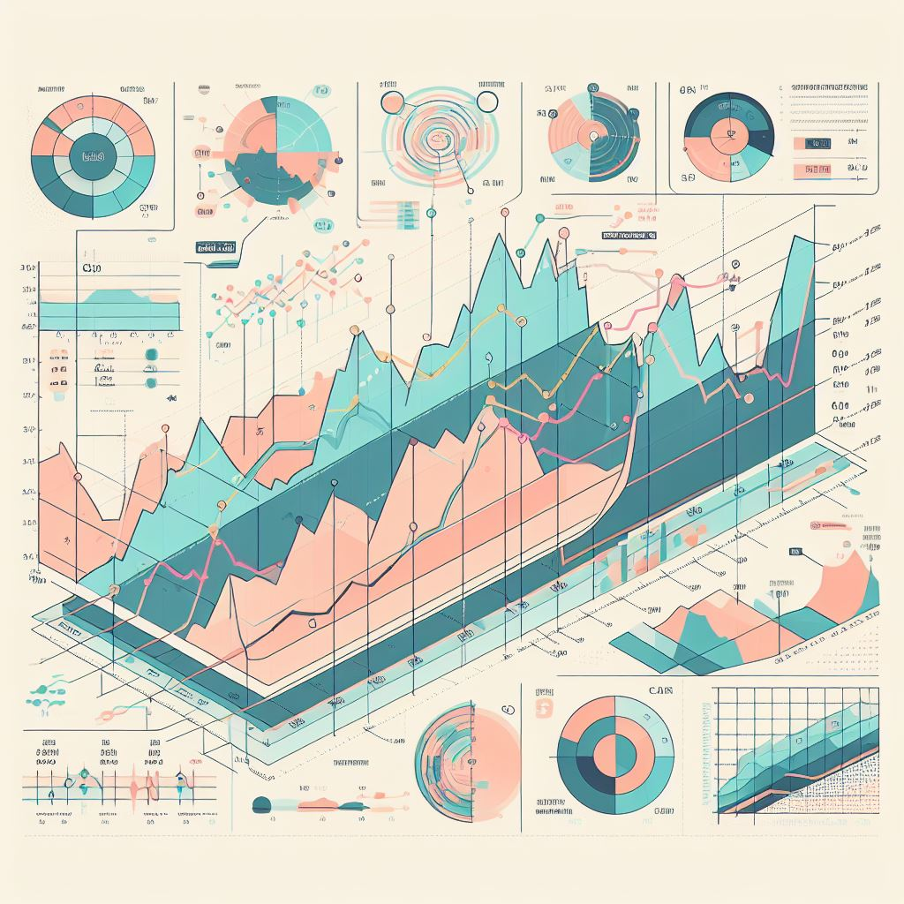

Data analysis is the process of inspecting, cleaning, transforming, and interpreting raw data to discover meaningful insights, patterns, and trends. It plays a pivotal role in making informed decisions, solving problems, and supporting various fields such as business, science, healthcare, and more. Here's a breakdown of what data analysis does:
Data Collection: The process begins with gathering relevant data from various sources, including databases, spreadsheets, sensors, surveys, or the internet.
Data Cleaning: Raw data often contains errors, missing values, or inconsistencies. Data analysts clean and preprocess the data to ensure its quality and reliability.
Data Transformation: Data may need to be transformed or converted into different formats to facilitate analysis. This includes aggregating, filtering, or normalizing data.
Exploratory Data Analysis (EDA): Analysts use various techniques to explore the data, such as summary statistics, data visualization, and correlation analysis, to understand its characteristics and identify initial patterns.
Statistical Analysis: This involves applying statistical methods to examine relationships between variables, test hypotheses, and derive conclusions.
Machine Learning: In some cases, data analysis employs machine learning algorithms to build predictive models and gain deeper insights. These models can make future predictions based on historical data.
Data Visualization: Creating charts, graphs, and visual representations of data is essential for conveying insights effectively to non-technical stakeholders.
Interpretation: Analysts interpret the results of their analysis, drawing conclusions and making recommendations based on their findings.
Decision-Making: The insights derived from data analysis assist in informed decision-making, whether it's optimizing business operations, improving product designs, or addressing scientific research questions.
Continuous Improvement: Data analysis is an iterative process. It may require repeated cycles of analysis, refinement, and validation to ensure the accuracy and relevance of findings.

In summary, data analysis helps transform raw data into valuable information, enabling organizations and individuals to better understand their surroundings, make data-driven decisions, and solve complex problems. It's a fundamental tool for leveraging the wealth of data available in the modern world.